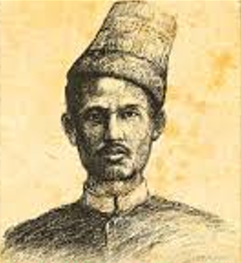

Sultan Alauddin Riayat Syah memerintah Aceh sejak tahun 1537-1568. Di bawah pemerintahannya, Aceh berkembang menjadi bandar utama di Asia bagi pedagang muslim mancanegara. Sejak Malaka direbut Portugis, mereka menghindari Selat Malaka dan beralih menyusuri pesisir barat Sumatra, ke Selat Sunda, lalu terus ke timur Indonesia atau langsung ke Cina.
Kedudukan strategis Aceh menjadikannya sebagai bandar transito lada dari Sumatra dan rempah-rempah dari Maluku. Kedudukan itu diraih bukan tanpa hambatan,
sebab Aceh harus menghadapi rongrongan Portugis,
Guna memenangkan persaingan, Aceh membangun angkatan laut yang kuat. Kerajaan itu pun membina hubungan diplomatik dengan Turki Ottoman yang dianggap sebagai kerajaan Islam terbesar pada waktu itu.